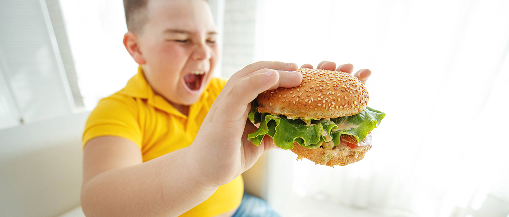

OBESITA' INFANTILE
Le mamme e i papà desiderano che ogni boccone che mettono nel piatto dei loro piccoli, fin dalle prime pappe, li aiuti a crescere sani e forti, e a prevenire quelle patologie croniche che sempre più spesso ormai affliggono gli adulti. La realtà dei fatti però è purtroppo un’altra. Il sistema di sorveglianza “OKkio alla salute” promosso dall’Istituto Superiore di Sanità, ha rilevato che nel 2014 un bambino su cinque era sovrappeso, e un bambino su dieci era obeso. Questo vuol dire che in Italia nel 2014 circa un bambino su tre era sovrappeso o obeso, e quindi che qualcosa nella sua alimentazione – e probabilmente anche in quella di tutta la famiglia – era sbagliato. Dopo oltre 10 anni, per la prima volta nel 2016 la fame nel mondo è tornata a crescere, coinvolgendo circa 815 milioni di persone, l’11% della popolazione mondiale, il 7,7% dei bambini nel mondo. Contestualmente, nel mondo ci sono 1,9 miliardi di adulti in sovrappeso – dei quali 40,6 milioni sono bambini – oltre a 650 milioni di persone affette da obesità. Sovrappeso e obesità sono causa di circa 2,8 milioni di decessi all’anno e incidono sulla mortalità mondiale più della denutrizione. Oggi l’obesità è ovunque riconosciuta come una patologia, meritevole di essere curata e prevenuta, per quanto la consapevolezza in questo senso non sia ancora abbastanza diffusa e le misure di contrasto al problema siano ovunque ancora ampiamente insufficienti. Alla base di questa emergenza ci sono motivazioni legate all’intreccio tra povertà economica e povertà educativa. Per questa ragione abbiamo deciso di lanciare una campagna di sensibilizzazione e raccolta fondi per contrastare le pericolose conseguenze di questi due fenomeni sulla salute dei bambini. La campagna “C’era una volta la cena”, realizzata in collaborazione con l’Ospedale Gaslini di Genova e la FIMP – Federazione Italiana Medici Pediatri, ha l’obiettivo di promuovere attività di monitoraggio, educazione alimentare e prevenzione della malnutrizione e offrire assistenza concreta ai bambini a rischio malnutrizione a causa del disagio economico delle loro famiglie.
Vai su ceraunavoltalacena.it e combatti la malnutrizione in Italia insieme a noi!

Torna al menu
DIFFUSIONE E RISCHI
Ogni giorno diventa sempre più pressante il problema dell’obesità infantile. Da un’indagine promossa dal Ministero della Salute nel 2010, emerge che in Italia sono oltre un milione i bambini in sovrappeso e 400 mila gli obesi, rispettivamente il 22,9% e l’11,1% di tutti i bimbi tra gli 8 e i 9 anni. I bambini obesi in età infantile e scolare hanno inoltre, grande probabilità di diventare degli adulti obesi. Risulta quindi evidente come una educazione alimentare precoce sia alla base di una corretta igiene alimentare e di una prevenzione di future patologie. I primi passi che compie a tavola non sono solo fondamentali per la sua crescita, ma possono contribuire a prevenire l'insorgenza in età adulta di malattie correlate all'alimentazione. Ecco allora che l'arrivo di un pargolo può essere l'occasione per migliorare la propria dieta, perché come spiega John Prescott, professore di psicologia all'Università di Australia e Nuova Zelanda e autore di «Questione di gusto» (Sironi editori, 2013), ognuno di noi finisce con l'amare proprio i cibi che mangia ogni giorno. E le preferenze alimentari dei bambini sono inevitabilmente influenzate dalla dieta materna prima (durante la gravidanza e l'allattamento) e dalle scelte dei genitori poi.
Come insegnargli a mangiare tutto?
Niente paura: educare i propri figli ad assaggiare tutto (o quasi) si può, e si deve per la sua crescita e il suo futuro. Ma è fondamentale mettere in atto una serie di accorgimenti ed evitare errori. Per cominciare, ecco cosa non si dovrebbe fare:
- Non costringerlo a mangiare. “La coercizione è controproducente”. “Forzarlo ad assaggiare qualcosa contro la sua volontà finirà solo per aumentare la sua avversione verso l’alimento stesso”. - Non convincerlo in cambio di un premio. Nella sua testa, frasi come “se finisci le verdure, ti do il gelato” o “ti faccio vedere la tv” risuonano così: “le verdure fanno talmente schifo che mi merito un premio se le mangio”. Poi, magari, le mangia pure, ma le ricerche dimostrano che 9 volte su 10 la preferenza per quell’alimento non migliora o addirittura diminuisce.
- Non offrire un’alternativa dopo l’altra. Non vuole la pasta al sugo? Gliela rifai al pesto. Niente da fare? Provi con quella in bianco. La rifiuta? Tenti con il biberon. La proposta del pasto dovrebbe comprendere 2-3 pietanze (primo, secondo e contorno, più la frutta), cercando di includerne almeno una di suo gradimento”.
- Non preparargli esclusivamente i suoi piatti preferiti. Il pensiero è: “Almeno così mangia, senza fare scenate per ogni boccone”. È un po’ come firmare la propria condanna: rimandare i problemi di selettività e neofobia significa solo peggiorarli.
- Non distrarlo con i cartoni. Circa il 40% dei bambini consuma la pappa davanti alla tv o al tablet. “Sbagliato! Il momento del pasto è importante, non è un momento di gioco, e non devono essere presenti distrazioni”.
Torna al menu
Quali sono, allora, le strategie vincenti?
- Crea un ambiente favorevole. Anche se è più facile a parole che nei fatti, il pasto dovrebbe svolgersi sempre in un clima sereno, senza riversare sul bambino l’ansia (perché mangi) e lo stress (perché non lo fa). Buona regola è dargli una routine, rispettando l’orario dei pasti prestabilito.
- Dai l’esempio. “Il bambino tende a mangiare per imitazione”, osserva Morino. Se volete che consumi frutta e verdura, fatelo anche voi e portateli abitualmente in tavola. È consigliabile sedersi insieme a mangiare (mentre accade solo per un bambino su quattro) e cercare di avere lo stesso tipo di sana alimentazione.
- Ripeti la proposta. È importante ripresentare gli alimenti non graditi nel tempo, cucinati in maniera diversa e senza imposizioni: possono essere necessarie dalle 10 alle 16 volte perché il bimbo accetti d’ingoiare un nuovo cibo. Eppure, un genitore su quattro demorde dopo appena pochi tentativi falliti. Insisti.
- Lascia che scelga la sua porzione. I bambini si autoregolano, si saziano facilmente e devono avere la libertà di dire basta. Se la crescita è regolare, non c’è bisogno di preoccuparsi troppo.
- Coinvolgilo in cucina. Perché il piccolo vinca la sua diffidenza, stimola la sua curiosità: portalo a fare la spesa, lascia che ti aiuti a preparare le ricette e apparecchiare la tavola, crea piatti colorati (e non troppo pieni, altrimenti rischia di scoraggiarsi ancora prima di aver iniziato la degustazione) e permettigli di “sporcarsi le mani”. Il cibo dev’essere un’esperienza multisensoriale, giocosa e positiva.